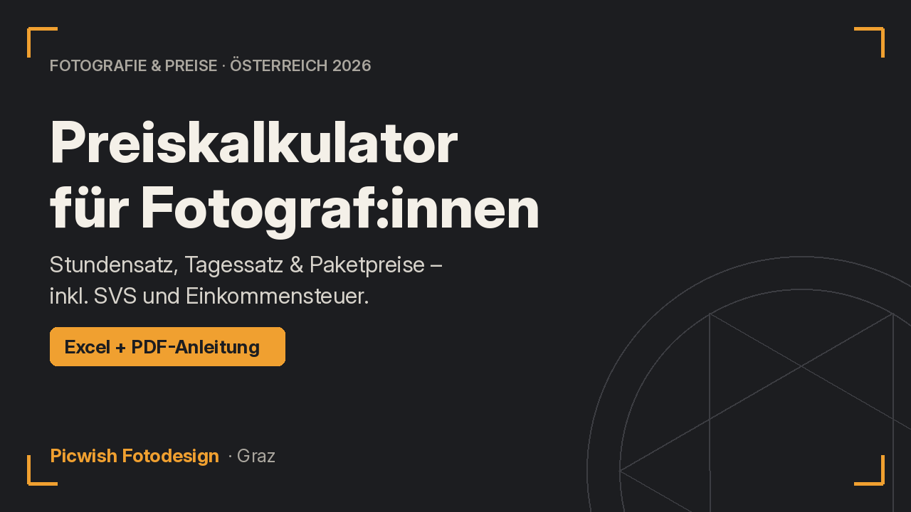
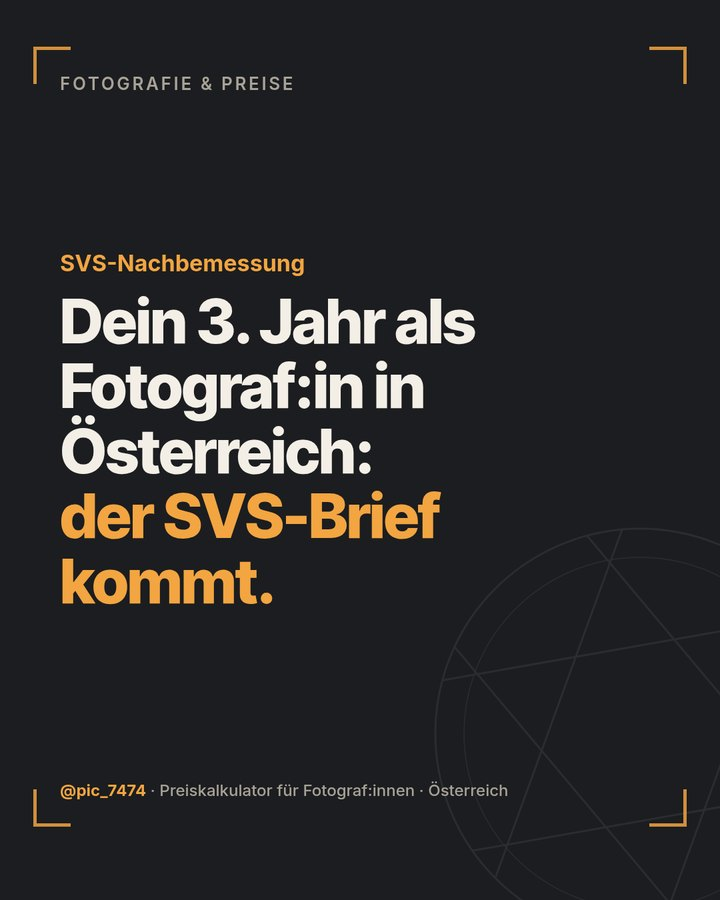
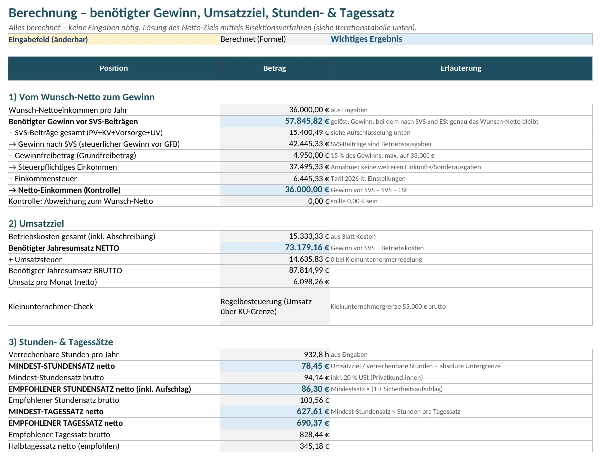
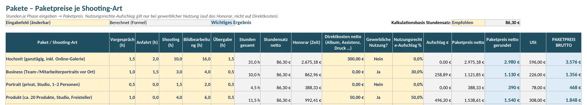
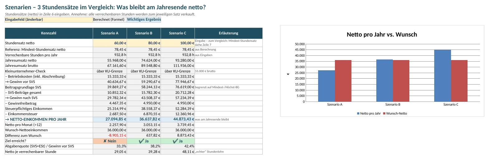

Fotografie & Preise · Österreich 2026
Was musst du als Fotograf:in in Österreich wirklich verlangen?
Rechne es dir aus – inklusive SVS und Steuer. Der Excel-Preiskalkulator berechnet dir aus deinem Wunsch-Netto deinen Mindest-Stundensatz, deinen Tagessatz und fertige Paketpreise für Hochzeit, Business, Portrait und Produkt – mit den österreichischen Werten 2026 und den offiziellen Quellen dazu.

Kennst du das?
- Du hast deine Preise irgendwann „nach Gefühl“ festgelegt – oder dich an anderen Fotograf:innen auf Instagram orientiert. Ob die Rechnung für dich aufgeht, weißt du nicht genau.
- Die SVS-Nachzahlung hat dich kalt erwischt. In den ersten Jahren zahlst du vorläufig wenig – und dann kommt der Bescheid.
- 100 € pro Stunde klingt viel. Aber du hast keine Ahnung, wie viel davon nach Kosten, SVS und Einkommensteuer wirklich bei dir landet.
- Du sitzt nach einer Hochzeit noch tagelang an der Bildbearbeitung – und merkst, dass dein Paketpreis das gar nicht abdeckt.
- Ein Unternehmen will deine Fotos für Website und Werbung nutzen. Was du für die Nutzungsrechte verlangen sollst? Unklar.
- Du fragst dich, ob du mit der Kleinunternehmerregelung gut fährst oder ob du die 55.000-€-Grenze ohnehin bald überschreitest.
Das Problem ist nicht dein Talent. Es fehlt eine ehrliche Rechnung – angepasst an Österreich, nicht an Deutschland.

Die Lösung
Ein Kalkulator, der rückwärts rechnet
Du startest mit der Frage, die wirklich zählt: Wie viel möchtest du im Jahr netto zum Leben haben?
Der Kalkulator rechnet von dort aus rückwärts – über Einkommensteuer, Gewinnfreibetrag, SVS-Beiträge und deine Betriebskosten – bis zu dem Stundensatz, den du mindestens brauchst.
Keine Makros, keine Zirkelbezüge, keine Blackbox: Jede Zahl ist eine nachvollziehbare Formel.
Was drin ist
Excel-Datei mit 7 Tabellenblättern + PDF-Anleitung
Anleitung
Kurze Schritt-für-Schritt-Erklärung, Farblegende, Annahmen auf einen Blick.
Eingaben
Wunsch-Nettoeinkommen, Arbeitsstunden pro Woche, Urlaubs-, Feier-, Krankheits- und Fortbildungstage, Anteil verrechenbarer Stunden, Sicherheitsaufschlag, Kleinunternehmerregelung Ja/Nein. Das Zeitbudget wird automatisch berechnet.
Kosten
Deine Ausrüstung mit Preis und Nutzungsdauer → jährliche Abschreibung. Dazu laufende Kosten wie Lightroom/Capture One, Galerie-Hosting, Versicherung, Studiomiete, Website, Fahrtkosten, Steuerberatung – monatlich oder jährlich, mit automatischer Vorsteuer-Logik.
Berechnung
Benötigter Gewinn, SVS-Beiträge (Pension, Kranken, Unfall, Selbständigenvorsorge), Gewinnfreibetrag, Einkommensteuer, Umsatzziel, Mindest- und empfohlener Stundensatz, Tagessatz, Kleinunternehmer-Check und die monatliche Rücklage für SVS und Steuer.
Pakete
Hochzeit, Business, Portrait, Produkt (plus freie Zeilen für eigene Pakete): Stunden für Vorgespräch, Anfahrt, Shooting, Bildbearbeitung und Übergabe → Paketpreis netto und brutto, inkl. Nutzungsrechte-Aufschlag.
Szenarien
Drei Stundensätze im direkten Vergleich: Was bleibt dir am Jahresende netto? Mit Diagramm.
Einstellungen
Alle gesetzlichen Werte 2026 (SVS-Beitragssätze, Mindest- und Höchstbeitragsgrundlage, Steuertarif, Kleinunternehmergrenze, Gewinnfreibetrag) als änderbare Zellen, jeweils mit Jahr und Link zur offiziellen Quelle (SVS, WKO, USP, BMF, RIS).
PDF-Anleitung
Die Gebrauchsanweisung zum Kalkulator als PDF – zum Nachlesen neben der Excel-Datei.
Ein Blick in die Datei (Beispielwerte)






Bilder anklicken zum Vergrößern. Alle Zahlen sind Beispielwerte – du trägst deine eigenen ein.
Was du davon hast
- Klarheit statt Bauchgefühl: Du weißt, welcher Stundensatz deine Untergrenze ist – und warum.
- Keine bösen SVS-Überraschungen: Der Kalkulator rechnet mit den endgültigen Beiträgen und zeigt dir, wie viel du pro Monat zur Seite legen solltest.
- Paketpreise, die deine echte Arbeitszeit abbilden – inklusive der Stunden am Schreibtisch.
- Argumente für dein Angebot: Du kannst Nutzungsrechte sauber als Aufschlag ausweisen.
- Entscheidungshilfe Kleinunternehmerregelung: Du siehst sofort, ob dein Umsatzziel unter oder über 55.000 € brutto liegt.
- Für Österreich gebaut: GSVG statt KSK, österreichischer Steuertarif, österreichische Feiertage, Gewinnfreibetrag.
- Jährliche Updates inklusive: Jedes Jahr im Jänner bekommst du die neuen gesetzlichen Werte kostenlos.
- Nachvollziehbar und anpassbar: Gelbe Felder ändern, alles andere rechnet mit. Formeln sind vor versehentlichem Überschreiben geschützt (ohne Passwort).
Für wen ist der Kalkulator?
- selbständige:r Fotograf:in in Österreich bist (Gewerbe, GSVG-versichert) – oder gerade gründest,
- Hochzeiten, Portraits, Business- oder Produktfotos anbietest,
- deine Preise endlich auf eine solide Basis stellen willst,
- mit Excel oder LibreOffice grundsätzlich klarkommst (Zahlen in gelbe Felder tippen reicht).
- in Deutschland oder der Schweiz tätig bist (andere Sozialversicherung und Steuer),
- angestellt fotografierst,
- eine vollständige Steuerplanung inkl. mehrerer Einkunftsarten, Familienbonus usw. erwartest – dafür brauchst du deine Steuerberatung.
Jährliche Updates
Jedes Jahr im Jänner: die neuen Werte, kostenlos
SVS-Werte, Steuertarif, Kleinunternehmergrenze und Gewinnfreibetrag ändern sich regelmäßig. Alle gesetzlichen Werte stehen gesammelt im Blatt „Einstellungen“ – du kannst sie jederzeit selbst anpassen, die Quellen sind verlinkt.
Du musst das aber nicht selbst machen: Jedes Jahr im Jänner bekommst du als Käufer:in kostenlos eine aktualisierte Version mit den neuen gesetzlichen Werten – per E-Mail an deine Bestelladresse.
Häufige Fragen
Funktioniert das auch, wenn ich Kleinunternehmer:in bin?
Ja. Du stellst in den Eingaben „Kleinunternehmerregelung: Ja“ ein. Dann rechnet der Kalkulator ohne Umsatzsteuer auf deinen Preisen und setzt deine Kosten brutto an (weil du keine Vorsteuer abziehen kannst). Ein Check zeigt dir, ob dein Umsatzziel unter der Grenze von 55.000 € brutto liegt – oder im 10-%-Toleranzbereich bzw. darüber.
Brauche ich Microsoft Excel?
Nein. Die Datei (.xlsx) funktioniert in Microsoft Excel (Windows/Mac) und im kostenlosen LibreOffice Calc. Sie kommt ohne Makros aus. Google Sheets und Apple Numbers sollten grundsätzlich funktionieren, sind aber nicht offiziell getestet – dort können Formatierung, Blattschutz oder Diagramm abweichen.
Gibt es Updates, wenn sich SVS-Werte oder der Steuertarif ändern?
Ja. Jedes Jahr im Jänner bekommst du als Käufer:in kostenlos eine aktualisierte Version mit den neuen gesetzlichen Werten (SVS, Steuertarif, Kleinunternehmergrenze, Gewinnfreibetrag) per E-Mail an deine Bestelladresse. Zusätzlich kannst du alle Werte im Blatt „Einstellungen“ selbst anpassen.
Ich bin erst im ersten oder zweiten Jahr – stimmt die SVS-Berechnung für mich?
Der Kalkulator rechnet bewusst mit den endgültigen Beiträgen auf Basis deines Gewinns. In den ersten Jahren zahlst du vorläufig oft weniger, die Differenz wird aber nachverrechnet. Für die Preisgestaltung ist die endgültige Belastung die ehrlichere Zahl.
Ist der Gewinnfreibetrag berücksichtigt?
Ja, der Grundfreibetrag (15 % des Gewinns bis 33.000 €). Den investitionsbedingten Gewinnfreibetrag berücksichtigt das Tool nicht – damit rechnest du eher vorsichtig.
Kann ich meine eigenen Pakete anlegen?
Ja, im Blatt „Pakete“ sind freie Zeilen für eigene Angebote vorgesehen, z. B. Familien-, Event- oder Immobilienshootings.
Wie viel Prozent soll ich für Nutzungsrechte verlangen?
Dafür gibt es in Österreich keinen verbindlichen Tarif. Im Tool stehen Beispielwerte (30 % bzw. 50 %), die du frei anpassen kannst – je nach Umfang, Dauer, Medien und Exklusivität der Nutzung.
Wie läuft die Bezahlung, und bekomme ich eine Rechnung?
Die Abwicklung der Zahlung erfolgt durch Digistore24. Nach dem Kauf bekommst du den Download-Zugang und deine Rechnung automatisch von Digistore24.
Darf ich die Datei weitergeben?
Nein. Die Datei ist für die persönliche Nutzung in deinem eigenen Betrieb lizenziert. Weiterverkauf, Weitergabe oder Veröffentlichung – auch in veränderter Form oder als Teil anderer Produkte – sind nicht gestattet.
Ich habe noch eine Frage – wie erreiche ich dich?
Schreib mir an robert.tuechi@gmail.com oder auf Instagram an @pic_7474. Ich antworte in der Regel innerhalb von 2 Werktagen. (Individuelle Steuer- oder SVS-Beratung kann ich leider nicht geben.)
Preiskalkulator für Fotograf:innen in Österreich 2026
Sofort als Download · kein Abo
- Excel-Datei mit 7 Tabellenblättern (Excel & LibreOffice, ohne Makros)
- PDF-Anleitung
- Österreichische Werte 2026 mit offiziellen Quellen
- Kostenlose Updates der gesetzlichen Werte jedes Jahr im Jänner
29 € Endpreis inkl. 20 % USt für Käufer:innen in Österreich. Verkauf, Zahlungsabwicklung und Rechnung über Digistore24 – den verbindlichen Endpreis siehst du im Bestellformular. Mit gültiger UID-Nummer kannst du dort netto bestellen.
Wichtiger Hinweis
Der Preiskalkulator ist ein Werkzeug zur unverbindlichen Orientierung und Kalkulation. Er ist keine Steuer-, Rechts- oder Sozialversicherungsberatung und ersetzt nicht das Gespräch mit deiner Steuerberatung, der SVS oder der WKO. Alle Werte wurden sorgfältig aus offiziellen Quellen übernommen (Stand Oktober 2026), aber ohne Gewähr. Deine persönliche Situation (weitere Einkünfte, Pauschalierung, Zusatzversicherungen, Absetzbeträge) kann zu anderen Ergebnissen führen.
Widerrufsrecht & Rückgabe
Verkäufer und dein Vertragspartner für den Kauf ist die Digistore24 GmbH (Wiedervertrieb). Es gelten die Käufer-AGB von Digistore24 sowie die Widerrufsbelehrung, die dir im Bestellformular angezeigt wird.
Als Verbraucher:in hast du grundsätzlich ein gesetzliches Widerrufsrecht von 14 Tagen. Bei digitalen Inhalten, die nicht auf einem körperlichen Datenträger geliefert werden (wie diesem Download), erlischt das Widerrufsrecht vorzeitig, wenn du vor Ablauf der Frist ausdrücklich zustimmst, dass mit der Bereitstellung sofort begonnen wird, und bestätigst, dass du damit dein Widerrufsrecht verlierst (§ 18 Abs. 1 Z 11 FAGG). Ob und wie lange eine Rückgabe möglich ist, siehst du verbindlich im Bestellformular von Digistore24. Für Rückgaben wende dich bitte an den Digistore24-Support.